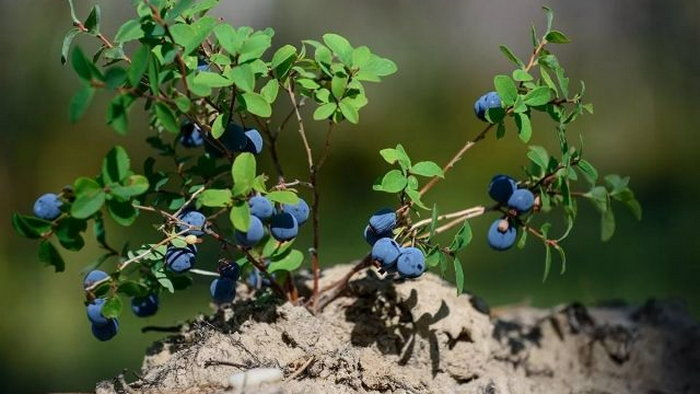

Вчера в 19:42
Если бы каждый земельный участок, на котором присутствуют пышные сады и бескрайние огороды, обладал нейтральной, щелочной либо в крайнем случае слабокислой почвой, было бы гораздо удобнее, поскольку не пришлось бы её раскислять, чтобы обеспечить наиболее благоприятную атмосферу для выращивания некоторых культур. Нужно учитывать, что существуют определенные виды растений, которые относятся к настоящим ценителям кислого грунта. В эту категорию истинных гурманов определенного растительного мира входят культуры хвойных пород, гортензии и различные представители вересковых.
К примеру, чтобы угодить голубике, обязательно нужна кислая почва, причём чтобы она поддерживалась в необходимом состоянии из года в год. В противном случае кустарник не будет способен поглотить нужные питательные компоненты, что негативно скажется в дальнейшем на его развитии. Обеспечить такие особые условия, максимально подходящие корневой системе данного растения, можно, добавив кислый торф для голубики, который предлагает компания ЖитомирТорф по выгодной цене.
Источник